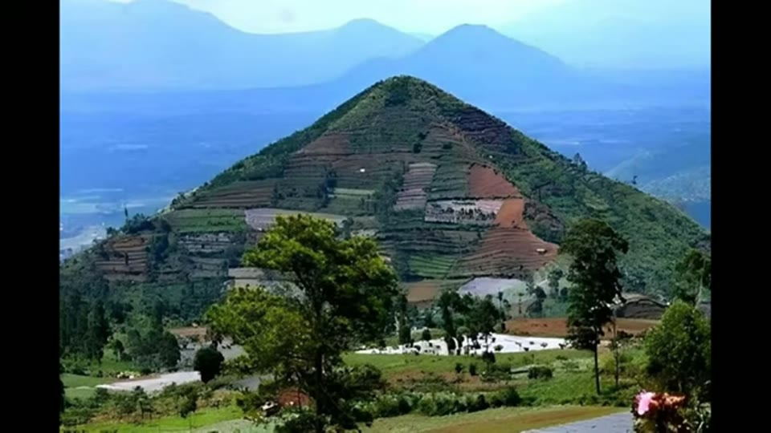
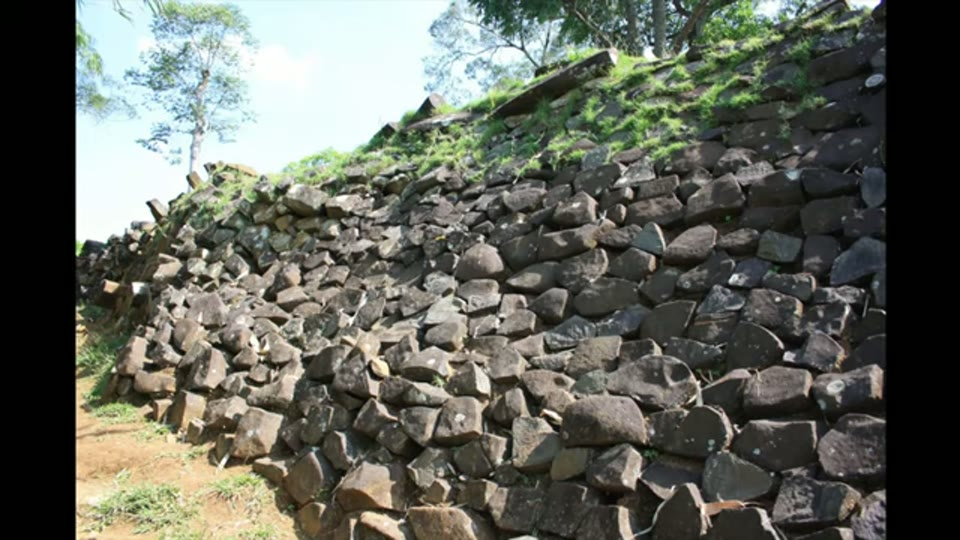

Curious Being
The Truth About Gunung Padang: Pyramid or Natural Volcano?
Tina · 24 min · watch on YouTube · summarised 2026-08-24
Gunung Padang in West Java is the alleged oldest pyramid on the planet, and one of the most important sites in alternative history. A 2023 paper by a team of Indonesian researchers put it at up to 27,000 years old, on the strength of radiocarbon dates from soil collected between rock layers. The archaeological community objected, the paper was investigated, and it was retracted 00:00–00:51.
The paper is identified on screen later, though never named aloud: Archaeological Prospection, published online 20 October 2023, doi 10.1002/arp.1912, with Danny Hilman Natawidjaja as lead author.
The photograph is of a different mountain
The first correction is the simplest and it lands before the argument starts 01:48–02:14. Search for Gunung Padang and you get a striking image: a tall green pyramid-shaped mountain under forest.
That is not the site. The megalithic terraces are on a lower, flat-topped hill. The famous cone is, she suggests, some other Indonesian volcano — and there is no shortage of candidates.


That the photograph everyone associates with the site is a different mountain.
Fact one: it is a volcano
The terraces sit on an extinct volcano, which most papers including the 2023 one acknowledge, and which she says is not emphasised enough 02:14–03:41. Volcanoes are cone-shaped because they build up over time from ejected material.
Gunung Padang's terraces are built on top of an extinct volcano, which means the mountain itself cannot be man-made.
Indonesia sits on the Pacific Ring of Fire and has the largest number of active volcanoes in the world, third overall behind the United States and Japan. She shows the density map, and where the site falls on it.

How volcanic the setting is.
Fact two: it is not an impressive site
Put beside the sites the alternative field usually cites, Gunung Padang does badly, and she is blunt about it 03:41–05:19. Petra and the Longyou caves have chambers with marks so uniform they resemble machine work. Giza, Baalbek and Sacsayhuamán have enormous rectangular or polygonal blocks. Those constructions are advanced by modern standards, which is what makes how a real question.
Gunung Padang's terraces are "comparably much smaller, cruder and less sophisticated." A few rectangular enclosures of slender short columns; elsewhere only piles of collapsed pillars. The columns have uneven surfaces, are slanted, curved or tapered, and are rarely at 90°.

What the site is actually made of.
Which produces the question that unlocks the whole video:
Why would ancient masons bother to carve so many slim posts that are not the same height, and then stack them so disorderly on the topsoil to form walls? It would have been easier to cut wider, more square stone blocks to make a better wall.
Because nobody carved them
The columns are columnar jointing — a natural structure formed as thick lava cools, contracts and cracks into regularly spaced fractures. She notes this is not her claim: it is confirmed by multiple papers including several by Indonesian researchers 05:19–08:11.
The comparison set is the famous ones: the Giant's Causeway in Northern Ireland, Fingal's Cave on Staffa in Scotland, Devils Tower in Wyoming, and Devils Postpile in California — where the loose columns lie in a heap at the base.

That loose piles of columns are what columnar jointing leaves behind.
Doesn't this pile in California resemble the piles at Gunung Padang?
The geology is given properly. Most volcanic columns are hexagonal but may have anywhere from three to seven sides. A regular, straight, larger-diameter array is a colonnade; an irregular, less straight, smaller-diameter array is an entablature. Columns can be vertical, horizontal, angled or bent, and curved or tilted ones indicate something affected the cooling rate or surface — which would explain the curved pillars at Gunung Padang. Columnar jointing is commonest in basaltic flows; Gunung Padang's columns are andesite, similar to basalt but paler and lower in iron and magnesium.
So the reconstruction she offers 08:11–09:29: a long time ago people found these columns lying around on the hill, took it for a sign or a gift from heaven, and arranged them into steps, floors, shrines or buildings — leaving some piles untouched. No quarrying, no carving, short-range transport, and much smaller stones. The work is far simpler than at Baalbek, and needed no advanced metallurgy, architecture or engineering.
There is a precedent she points to 09:29–10:14: at another columnar jointing site in India, local people used the abundant volcanic columns on top of a volcano to make stairs and U-shaped stacked walls as a place of worship — the same thing found at Gunung Padang. Modern companies, she adds, sell natural basalt columns for gardens and sculpture.

The precedent: people repurposing volcanic columns into walls.
Even the walls may be natural
The retaining walls are the strongest-looking evidence for construction, because they appear carefully assembled from stacked columns. She allows that they might be 09:44–11:23. But the cooling surface of lava can be flat or near-flat, and the columnar rock at Gunung Padang lies gently slanted downhill — which is what those walls look like.
Her comparison set for that: part of a mountain in Utah, areas of Devils Postpile, Staffa, and Cape Stolbchaty in Russia, where columns form an almost flat surface with striking patterns.

That a lava cooling surface can be near-flat and look laid.
Indeed, nature can generate curiously beautiful columnar jointing that is almost flat, which looks designed and man-made.
The dating, and the thing nobody explains
The 2023 paper's core argument is that older structures of andesite columns lie buried beneath the terraces, with hidden cavities inside the site, established by bore drilling, electrical resistivity tomography, ground-penetrating radar, trenching and coring 11:23–12:35.
Core GP1, in the middle of the terraces, yields 14,000 years. The headline dates come from core GP2, drilled just outside the highest terrace: two results beyond 21,000 years, one at 7.5 m below ground and one at 11 m.
And here is the observation that is entirely hers 12:35–13:24:
I noticed that the 27,000-year-old soil sample is at the shallower depth, 7.5 m, while the deeper soil from the same core is a few thousand years younger. That is unusual, because normally it should be the other way around.
Deeper sediment should be older. The inversion appears in both the radiocarbon table and the core section diagram, so it is not a slip — and the authors offer no explanation for it at all.
The table she puts on screen makes it worse than the narration does, and it carries lab codes. GP2-750, at 750 cm, returns 22,750 ± 120 BP (BETA# 331496). GP2-1130, from the same core 3.8 metres deeper, returns 19,400 ± 80 BP (BETA# 331498). The shallower sample is about 3,350 radiocarbon years older than the one beneath it, and the error bars are 120 and 80 years — nowhere near enough to close the gap. Both are traceable.

The dating, and the inversion nobody explains.
What a date on soil actually dates
The central objection, and it is the same one the retraction turns on 13:24–16:33. The three oldest soil samples were extracted from spaces between rock fragments. That only dates construction if there is clear evidence the rocks were arranged by humans.
If the soils are natural sediments, everything follows differently. Gunung Padang sits on a volcano that probably erupted many times. After each eruption, gas, lava and tephra are emitted; ash settles on the rock layer and lithifies. During long dormant intervals, weathering and erosion break down the surface and sediment accumulates in cracks, fractures and gaps between the volcanic rocks. The next eruption locks it in place. That process would put old organic soil between rock layers without any human involvement.
Likewise, if we do deep core drills in other volcanic sites like Devils Postpile in California, it is very possible that we will find some really old organic soil samples due to sediments embedded between lava layers. But that doesn't prove these places were created by humans during those ancient periods.
She then quotes the archaeologist Flint Dibble, whose version is sharper:
If you went to the Palace of Westminster and dropped a core 7 m into the ground and pulled out a soil sample, you might date it as being 40,000 years old. But that does not mean the Palace of Westminster was built 40,000 years ago.
What the excavation actually found
The Indonesian team dug an 11 m trench next to core GP2, the one with the oldest dates. They found no telltale signs of human activity — no fire-induced charcoal, no bone fragments, "not even rocks that remotely look as if they had been shaped by humans" 16:33–17:59.
Shallower trenches did produce a few rocks that might have been worked, in particular one said to be carved as a traditional kujang blade. But the soils in those shallow trenches are only a few thousand years old, and none of them shows fire or bone either.

The one object from the trenches that might be worked.
Her argument from that is a positive prediction rather than a complaint. If people really arranged structures from these columns 27,000 years ago, they would have spent time there — lit fires, cooked, used tools — and left traces.
The retraction notice is put on screen in full and quoted 17:59–18:38. It records that concerns were raised by third parties with expertise in geophysics, archaeology and radiocarbon dating, and that the editors concluded the article contains a major error not identified during peer review:
The radiocarbon dating was applied to soil samples that were not associated with any artifacts or features that could be reliably interpreted as anthropogenic or "man-made." Therefore, the interpretation that the site is an ancient pyramid built 9000 or more years ago is incorrect, and the article must be retracted.
The notice's last sentence is legible on screen and is not read out: "Danny Hilman Natawidjaja responded on behalf of the authors, all of whom disagree with the retraction."

The retraction, in its own words.
The chambers may be lava tubes
The other claim is that cavities under the terraces are artificial chambers, detected by ERT survey 18:38–20:21. Her answer is that an extinct volcano has the characteristics of a volcano — including lava caves, formed where flowing lava moves beneath a hardened surface and the tube later empties. Lava tubes form close to the surface and are of more or less constant diameter.
So she went and found papers using the same ERT technique to detect and map lava tubes. In ERT, red indicates high resistivity, and in those papers the red pockets near ground level are identified as lava tubes. Set the Gunung Padang survey graphs beside them and they have the same multiple red pockets in the same position.

That the cavities may be lava tubes.
I think it's possible, if not likely, that the cavities in Gunung Padang are lava caves.
The comparison is better than she claims in one way and worse in another, and both are on the frame. Better: the study she sets beside it has ground truth — a real lava tube system mapped by terrestrial laser scanning — so the match is not merely between two colour plots. Worse: that study's own figure states, twice and with arrows, "weak correlation between TLS and ERT anomaly". The caveat is on screen throughout and is not mentioned.
The word "mortar"
The sharpest thing in the video, and it is about language rather than geology 20:21–21:55. The Indonesian researchers wrote that there is fine-grained "mortar or soil" between the buried columns.
Those are not the same thing. Mortar is a workable paste that hardens to bind masonry, and its presence usually indicates artificial construction. Soil between columnar joints is natural sediment. Consolidated volcanic ash filling the joints would look like neither.
Her questions: did they test it? Do most of the joints contain this alleged mortar? Why dig the trenches and not sample the material? And she notes that the exposed terraces above use no mortar at all.
I don't think it's appropriate or scientific to cavalierly use the word mortar when no testing has been done. That's misleading and disingenuous. Could it be that the authors intentionally did so to influence the audience's opinion?
Where she lands
Gunung Padang is not a man-made pyramid but terraces built on an extinct volcano; the structures are naturally formed volcanic columns rather than cut stone; the flattish retaining walls could be lava cooling surfaces; the 20,000-year soils come from buried rock layers that could easily be natural sediment; and there is no archaeological evidence of human activity there that far back 22:12–23:31.
I doubt it can be called a pyramid at all… It remains an interesting archaeological site, but the wishful titles such as "the prehistoric pyramid" are just empty hype.
What you can check yourself
- The paper was retracted, and retractions are public documents. The notice states the reason, and it can be read against the original.
- The date inversion is in the paper's own figures. Two published dates from one core, the older at 7.5 m and the younger at 11 m, printed in both a table and a section diagram. Anyone can look.
- Columnar jointing is one of the best-documented landforms there is. Giant's Causeway, Fingal's Cave, Devils Tower, Devils Postpile and Cape Stolbchaty are photographed, visited and described in every introductory geology text.
- The talus pile at Devils Postpile is the comparison that costs nothing. Loose columnar fragments heaped at the base of a cliff, next to photographs of the "collapsed" piles at Gunung Padang.
- That the columns are natural is not in dispute and is confirmed in the Indonesian literature, including by the paper's own authors.
- Andesite versus basalt is a checkable petrological claim, and the site's rock type is published.
- ERT surveys of lava tubes are published, and the red high-resistivity pockets in them can be compared with the Gunung Padang figures directly.
- Whether the exposed terraces use mortar is visible in photographs.
- Flint Dibble's Westminster analogy is his, publicly made, and can be found and quoted properly.
What the video does not settle
- She never turns any of this on her own sites. The reasoning here is exact: natural processes can produce regular geometry; a date on sediment is not a date on construction; a claim needs an associated artefact; an untested material should not be named for what you hope it is. Every one of those applies to the Egyptian and Peruvian arguments she makes elsewhere, and none is applied to them.
- "Not impressive enough to be advanced" is an aesthetic criterion doing evidential work. Gunung Padang is dismissed partly for being cruder than Baalbek. That is an argument about which sites belong to a lost civilisation, not about whether Gunung Padang is built — and a site can be genuinely ancient and genuinely unimpressive.
- The lava tube proposal is a possibility, not a finding, and she says so — but the video's summary presents it more firmly than the section does. No one has surveyed the cavities.
- The natural-wall proposal is not tested either. That a lava cooling surface can be flat does not establish that these walls are one. The comparison sites are offered visually, exactly the method the Montana video says is insufficient on its own.
- The mortar criticism is fair and the motive imputation is not evidenced. Asking whether the material was tested is a good question. "Could it be that the authors intentionally did so to influence the audience's opinion?" is a charge about intent with nothing behind it, in a video otherwise careful to separate what is shown from what is inferred.
- No source is named except the retracted paper and Flint Dibble. The lava-tube ERT papers she says she found are not cited. The "multiple papers including several from local Indonesian researchers" confirming the columns are natural are not named. The Indian site is not named clearly enough to look up.
- The date inversion is raised and dropped. It is her own best observation and she does not pursue it — no discussion of what could invert dates in a core, whether reworked sediment or contamination or a mixed context, and no request that the authors address it.
- The 14,000-year date from GP1 is mentioned once and never returned to, though it sits inside the terraces rather than outside them.
- **Nothing establishes when the terraces were built.** The video is entirely negative. The conventional dating of the site, and what the shallow trenches with their few-thousand-year soils imply, is not laid out.
- The retraction is treated as settling the science. It settles what that paper established. The video does not distinguish between "this paper's evidence does not support its claim" and "the claim is false", which are different, and the second does not follow from the first.
- The authors dispute the retraction, and the video does not say so. The notice's closing sentence — that Danny Hilman Natawidjaja responded on behalf of the authors, all of whom disagree — is on screen and is not read out. A viewer would not know the matter is contested by the people who did the fieldwork.
- The lava-tube study's own caveat is left out. Its figure says "weak correlation between TLS and ERT anomaly", twice, in the frame she uses to argue the cavities are lava tubes.
See also
- Are the Montana Megaliths Man-Made? — six months earlier, the same question and the same answer at four other sites, and where she builds the two-part test for telling built from cracked. Columnar jointing appears in both.
- Carolina Bays Mystery — the third of the run: a natural landform argued out of the alternative canon, with the same insistence that regularity is not evidence of design.
- Great Pyramids' Radiocarbon Dating and Questioning the Luminescence Dating Result of the Giza Pyramid — where a date that does not fit the accepted account is treated as evidence against the account, rather than as a question about what the sample dates. The reasoning here is the inverse and is much stronger.
- Egyptian stone vases — the corpus's other retraction, and the other entry where a headline alternative claim is withdrawn by someone close to it.
- Was an Advanced Civilization Wiped Out by a 12,800-Year-old Comet at Younger Dryas? — the other video where she reaches a conclusion she did not want.
What we have not checked
- The 2023 paper has not been read. Its retraction notice, however, is fully legible on screen — Archaeological Prospection, doi 10.1002/arp.1912, published online 20 October 2023, retracted by the Editors-in-Chief Eileen Ernenwein and Gregory Tsokas with John Wiley & Sons — and the wording quoted here is transcribed from that frame rather than from the audio.
- The radiocarbon figures come from the paper's own table, on screen, with Beta Analytic lab codes BETA# 331496 and BETA# 331498. They have not been checked against the published paper, and the lab codes are the way to do it.
- The lava-tube comparison study is not named and has not been located, so its "weak correlation" caveat is reported from the frame alone and its context is unknown.
- This is an auto-generated transcript and it destroys the site's name. "G padan", "gam padan", "gunam padan", "gong padan", "gadan", "Kun padan", "Gom padan" are all Gunung Padang. Also "colomer/colomar/colomet" for columnar; "bastic" for basaltic; "TFA" and "tafra" for tephra; "ignis" for igneous; "inature" for entablature; "cynic" for scenic; "Boro drils" for bore drills; "craing" for coring.
- Several place names were inferred and should be confirmed. "Cape stop CH in Russia" as Cape Stolbchaty on Kunashir; "fingles cave step Island" as Fingal's Cave on Staffa; "sta elen in Scotland" as Staffa again; "boab turkey" as the basalt columns at Boyabat; "Kang blade" as kujang, which fits the site's Sundanese setting.
- Two locations do not resolve at all. "A portion of the St mountain in Utah" and the Indian columnar site heard as "kavad Hills" — neither has been identified, and the frames should be checked for an on-screen label before either is repeated.
- "Flint double" is Flint Dibble, which is confident from the context, but the Westminster passage has not been located in his own words and is quoted here as she renders it.
- No coordinates for Gunung Padang are given in the video, and those recorded with the images are approximate.
- The dry-stone wall shown during the Indian precedent is not captioned, and whether it shows that site or Gunung Padang itself has not been established.
- The near-flat columnar surface is not captioned either. The narration names Cape Stolbchaty in the same passage; the identification of the image is unconfirmed.